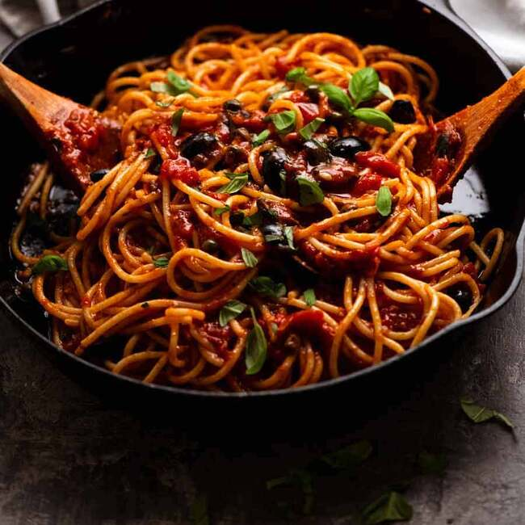

Puttanesca Recipe

What is puttanesca?
Puttanesca sauce has a robust flavor. It’s a bold and savory Italian sauce made with tomatoes, anchovies, capers, garlic, and olives, perfect for enhancing pasta dishes.
Ingredients
- Tomatoes
- Capers
- Anchovies
- Olives
- Pasta
Steps
- Cook garlic and red pepper flakes in oil. Add capers and anchovies and cook.
- Squeeze whole tomatoes into the pan (discard the juices).
- Add crushed tomatoes and olives and simmer (recipe below).
- Season with salt and pepper and serve as desired.